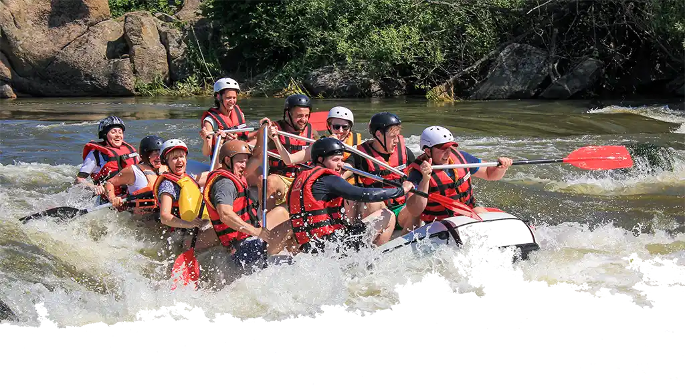
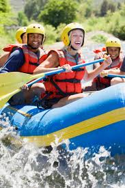
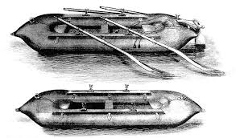

Rafting is an adventure sport that involves navigating rivers and other fast-flowing bodies of water in an inflatable boat. This thrilling activity combines teamwork, endurance, and adrenaline, making it a popular choice among nature lovers and adventure seekers.


White Water Rafting
History
The history of rafting dates back to the mid-19th century, when adventurers began to systematically explore rivers. In 1842, U.S. Army Lieutenant John Fremont, along with Horace H. Day, designed and built one of the first inflatable boats, which they used to explore the Platte River in the United States. This expedition marked one of the earliest recorded uses of an inflatable boat for navigating turbulent waters. As the 20th century progressed, rafting began to gain popularity as a recreational activity, especially after World War II when American soldiers, seeking thrills and adventure, ventured into rivers like the Colorado. The first rafting competitions also began to emerge during this time, and by the 1970s, the first commercial rafting companies were established, making the sport accessible to the general public.

Rafting experienced significant growth globally in the following decades, driven by the promotion of adventure sports and ecotourism. In many countries, the construction of dams and the development of river infrastructure facilitated access to previously unexplored rivers, expanding opportunities for rafting. Technology also played a crucial role in the evolution of the sport; inflatable boats became safer and more durable, and specialized equipment such as helmets and life jackets improved the safety and experience of participants. Today, rafting is a popular activity in destinations worldwide, from the wild rivers of North and South America to the majestic rivers of Asia and Africa. It has become not only an adventure sport but also a means to promote river conservation and respect for nature.